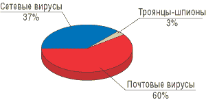

Сегодня ИТ - это не просто одна из вспомогательных функций предприятия; все чаще компьютерные системы составляют саму основу всей деятельности компаний. Но одновременно растут и угрозы нормальной, бесперебойной работе информационных систем. Наиболее яркий пример такой ситуации - Интернет, который позволил поднять на принципиально новый уровень эффективность применения ИТ для решения самых разнообразных бизнес-задач, но одновременно стал основным источником опасностей, грозящих нормальному функционированию предприятий.
В значимости проблемы ИТ-безопасности сегодня никого не надо убеждать, ее хорошо осознают не только ИТ-специалисты. К примеру, как показало одно из специальных исследований в Европе, более 80% руководителей считают, что ИТ-безопасность имеет важнейшее значение для успешной работы компаний, а более четверти из них отметили, что отдача на инвестиции в сферу безопасности оказалась более высокой, чем ожидалось.
Однако для построения эффективной системы защиты и оптимизации затрат необходимо хорошо ориентироваться в динамично меняющейся ситуации на фронте борьбы за ИТ-безопасность. Для этого полезно познакомиться с анализом основных угроз, который проводят как ведущие поставщики средств защиты, так и независимые эксперты. В данной статье мы познакомим читателей с результатами исследований, проведенных по итогам 2005 г. компаниями Symantec (http://www.symantec.com) и "Лаборатория Касперского" (http://www.kaspersky.ru).
Интернет-угрозы
По материалам отчета Symantec "Об угрозах Интернет-безопасности", опубликованного в сентябре 2005 г.
Корпорация Symantec установила несколько охватывающих весь мир сетей - источников данных об угрозах Интернет-безопасности. Система управления угрозами Symantec DeepSight Threat Management System и службы Symantec Managed Security Services состоят из более чем 24 тыс. сенсоров, отслеживающих сетевую активность в 180 странах мира. Помимо этого, Symantec собирает вредоносный код, а также отчеты о ПО spyware и adware более чем со 120 млн клиентских, серверных и шлюзовых систем, где установлены антивирусные системы корпорации. Symantec поддерживает одну из самых крупных в мире баз данных об уязвимостях, содержащую подробную информацию о более чем 13 тыс. уязвимостей, которые влияют на более чем 30 тыс. различных технологий от свыше 4000 производителей.
Помимо базы данных об уязвимостях, Symantec поддерживает работу BugTraq, одного из наиболее популярных Интернет-форумов, где публикуются сведения о новых уязвимостях и обсуждаются угрозы Интернет-безопасности. Наконец, сеть Symantec Probe Network, включающая более 2 млн учетных записей, получает почтовые сообщения из 20 различных стран мира, позволяя определить наиболее распространенный источник спама и фишинговой активности. Все это обеспечивает аналитикам корпорации достаточный набор непересекающихся данных, с помощью которых можно выявить и проанализировать тенденции в области Интернет-безопасности.
Результаты данного отчета базируются на сведениях, собранных с компьютерных систем стран Европы, Ближнего Востока и Африки (регион EMEA) за первую половину 2005 г. Согласно отчету Symantec, можно отметить следующие тенденции в развитии ситуации с Интернет-угрозами.
Увеличение числа обнаруживаемых уязвимостей. Зарегистрированы 1862 новые уязвимости, из которых 49% присвоен класс высокоопасных. 59% были связаны с технологиями разработки Web-приложений. Эти уязвимости особенно опасны, так как обеспечивают организаторам атаки доступ к конфиденциальной информации баз данных без компрометации каких бы то ни было серверов.
Увеличение активности бот-модулей. Обнаруживалось в среднем 10 352 бот-модуля в день. Для сравнения: в декабре 2004 г. этот показатель составлял около 5000 бот-модулей в день.
Рост фишинговой активности и спама. За отчетный период продолжался рост фишинговой активности. Symantec блокировала 1,04 млрд фишинговых атак, что составило 90% по сравнению с последними шестью месяцами 2004 г. Одно из каждых 125 сообщений, просканированных системой Symantec Brightmail AntiSpam, было признано попыткой спама.
Резкое увеличение числа модификаций вредоносного кода. Зарегистрированы 10 866 новых модификаций вирусов и червей Win32 - это почти на 48% выше числа вирусов, зарегистрированных во второй половине 2004 г. (тогда их было 7360). В свете этих показателей явно прослеживается тенденция ухода от масштабных, рассредоточенных угроз, таких, как рассылка в почтовых сообщениях червей, и переход к использованию настраиваемого вредоносного кода, имеющего модульную структуру.
Компрометация конфиденциальной информации. По данным отчета Symantec, за первое полугодие 2005 г. на долю вредоносного кода, компрометировавшего конфиденциальную информацию, приходилось 74% наиболее распространенных вредоносных программ. Угрозы, направленные на компрометацию конфиденциальной информации, могут привести к существенным финансовым потерям, особенно если речь идет о данных кредитных карт или банковских реквизитах.
Вредоносный код для мобильных устройств. Количество вредоносного кода для мобильных устройств продолжало увеличиваться. В новых угрозах уже реализованы мощные возможности вредоносного кода для мобильных устройств, несмотря на то что в целом количество таких угроз относительно невелико. Ожидается, что в ближайшем будущем ситуация изменится, поскольку мобильные платформы уже достигли определенной зрелости и в то же время бурное распространение получили средства связи, что обеспечило широкие возможности организации атак.
Наибольшее число уязвимостей было обнаружено в браузере Mozilla. Это 25 уязвимостей, признанных авторами данного браузера; из них 18 имеют класс высокоопасных. За тот же период в браузере Microsoft Internet Explorer было обнаружено 13 признанных производителем уязвимостей, из которых восемь отнесены к классу высокоопасных.
Вирусная активность
По материалам ежегодного обзора событий в области вредоносных программ "Лаборатории Касперского".
В 2005 г. было зафиксировано 14 крупных вирусных эпидемий, что втрое меньше показателя прошлого года (46 эпидемий). Основная причина этого - переход вирусописателей от глобальных эпидемий к гораздо менее заметным, локальным. В первую очередь это связано с тем, что в течение 2005 г. правоохранительные органы во всем мире заметно активизировались, много хакеров было арестовано, и компьютерный андеграунд начал избегать пристального внимания. Кроме того, антивирусные компании стали гораздо более оперативно реагировать на действия вирусописателей, и многие новые вредоносные программы не привели к крупным эпидемиям, так как антивирусные базы данных обновлялись в самом начале распространения этих программ.
Еще одна тенденция: 2005 г. однозначно прошел под знаком криминализации Интернета, и сейчас с уверенностью можно говорить, что подавляющее большинство вредоносных программ разрабатывается ради получения денег. Если говорить о краже финансовой информации (например, данных доступа к персональным банковским счетам), то для этих целей глобальные эпидемии не нужны: для обработки большого количества данных, полученных с массы зараженных компьютеров, требуется слишком много людей, что повышает опасность для преступников.
Крупнейшие вирусные эпидемии
В 2005 г. можно выделить четыре крупные вирусные эпидемии. Причиной их стали модификации почтового червя Bagle с индексами .ах и .ау (январь), сетевой вирус-червь Mytob.c (март) и две модификации почтового червя Sober - Sober.p (май) и Sober.y (ноябрь).
Bagle.ax и Bagle.ay появились практически одновременно: "Лаборатория Касперского" зафиксировала в конце января массовые спам-рассылки этих вредоносных программ. Эпидемию не удалось своевременно остановить или замедлить, поскольку для размножения эти черви использовали процедуру, имеющую ряд особенностей по сравнению с другими почтовыми червями. Они сканировали файловую систему пораженного компьютера и рассылали себя по всем найденным адресам электронной почты, за исключением адресов, принадлежащих крупным разработчикам антивирусного и прочих видов ПО. Этим объяснялось малое количество образцов червей, полученное антивирусными компаниями. Кроме того, для увеличения интенсивности распространения Bagle.ay вел поиск каталогов, содержащих строку "shar". Если такие каталоги были найдены, то в них червь выкладывал свое тело в файлы с названиями, схожими с наименованиями популярных приложений и утилит. Таким образом, число каналов распространения вредоносного кода было существенно увеличено за счет использования разделяемых ресурсов и P2P-сетей.
В марте 2005 г. была зафиксирована эпидемия сетевого червя Mytob.c - самого опасного из всех обнаруженных вариантов данного семейства. Он распространялся через Интернет в виде вложений в зараженные электронные письма, рассылая себя по всем найденным на зараженном компьютере адресам электронной почты, а также использовал для распространения уязвимость в сервисе LSASS Microsoft Windows (MS04-011). Этот червь был основан на исходных кодах печально известного лидера 2004 г. - червя Mydoom. В течение трех недель Mytob.c лидировал по показателям активности, занимая около 30% всего вирусного трафика в электронной почте. Точно так же, как bagle.ax и bagle.ay, он исключал из рассылки своих копий адреса, принадлежащие крупным разработчикам антивирусного и прочих видов ПО. Помимо процедур самораспространения, значительную опасность представлял содержащийся в этой вредоносной программе bot-компонент, позволяющий злоумышленнику управлять зараженным компьютером через IRC-каналы и получать полный доступ к хранящейся в нем информации.
В целом семейство червей Mytob стало самым массовым и распространенным из всех появившихся в 2005 г. - их было обнаружено более 120 вариантов. Представители Mytob в течение всего года составляли более половины от общего числа вредоносных программ, обнаруженных в почтовом трафике.
Семейство Sober известно благодаря своим сложным алгоритмам размножения и совершения вредоносных действий. Эпидемия почтового червя Sober.p была зафиксирована в мае 2005 г. Он побил все возможные рекорды своих "предшественников" - других почтовых червей по количеству рассылаемых писем и скорости распространения в западноевропейском сегменте Интернета (Голландия, Германия, Венгрия и другие страны), тогда как от азиатских и российских пользователей поступало минимум жалоб на заражение данной версией червя Sober. За короткое время этот червь стал наиболее часто встречающейся вредоносной программой в почтовом трафике.
В ноябре был обнаружен другой его вариант - Sober.у. Активно размножаться он начал только через некоторое время после обнаружения. Причина кроется в очередном сложном алгоритме размножения, для работы которого требуется участие других вредоносных программ того же семейства. Интересной особенностью эпидемии Sober.y можно считать фактическое ее отсутствие на территории России. Подобное уже случалось ранее, когда большинство сообщений о заражениях представителями данного семейства почтовых червей приходило с территории Германии. Sober.y был запрограммирован на обновление в 0 часов по Гринвичу 6 января 2006 г., и вся антивирусная индустрия ожидала серьезной эпидемии. Однако этого так и не случилось.
Двадцатка самых распространенных вредоносных программ в 2005 г.
|
| 1 | Email-Worm.Win32.Sober.p | 7,56% |
| 2 | EICAR-Test-File. | 3,56% |
| 3 | Email-Worm.Win32.Mydoom.l | 2,37% |
| 4 | Net-Worm.Win32.Mytob.ck | 1,96% |
| 5 | Email-Worm.Win32.NetSky.q | 1,72% |
| 6 | Trojan-Downloader.Win32.Small.axy. | 1,61% |
| 7 | Net-Worm.Win32.Mytob.c | 1,21% |
| 8 | Backdoor.Win32.Rbot.gen | 1,21% |
| 9 | Trojan-Spy.Win32.Bancos.u | 0,96% |
| 10 | Email-Worm.Win32.Sober.y | 0,78% |
| 11 | Backdoor.Win32.SdBot.gen | 0,65% |
| 12 | Not-a-virus:Monitor.Win32.Perflogger.az | 0,52% |
| 13 | Trojan.Win32.Agent.bi | 0,51% |
| 14 | Email-Worm.Win32.NetSky.aa | 0,50% |
| 15 | Not-a-virus:Porn-Downloader.Win32.TibSystems. | 0,49% |
| 16 | Trojan-Spy.Win32.Bancos.ha | 0,48% |
| 17 | Not-a-virus:Monitor.Win32.Perflogger.ad | 0,47% |
| 18 | Email-Worm.Win32.Sobig.f | 0,46% |
| 19 | Trojan-Downloader.Win32.IstBar.is | 0,44% |
| 20 | Trojan.Win32.Dialer.q | 0,44% |
Вредоносное ПО в почтовом трафике
В течение всего года в почтовом трафике превалировали исключительно черви (рис. 1) - как почтовые, так и сетевые. В основном это были представители "старых" вирусных семейств, такие, как Bagle, NetSky, Sober, Zafi, Mydoom. Однако несомненным лидером стали черви Mytob, появившиеся в 2005 г. (см. таблицу). Их показатели были достигнуты во многом за счет двойного способа размножения - через почту и непосредственно по сети, при помощи уязвимостей в ОС Windows.
Второе место по распространенности заняли различные троянские программы, в основном относящиеся к классам Trojan-Downloader, Trojan-Spy, а также многочисленные фишинговые атаки, которые в 2005 г. вышли на пик своей активности за все годы. Традиционные вирусы и макровирусы практически полностью исчезли из нашей статистики.
|  | Рис. 1. Распространенность вирусов по типам.
|
Двадцатка самых распространенных вредоносных программ в почтовом трафике в 2005 г.
| 1 | New * | Net-Worm.Win32.Mytob.c | 14,92% |
| 2 | - | Email-Worm.Win32.NetSky.q | 13,61% |
| 3 | New | Email-Worm.Win32.Zafi.d | 9,89% |
| 4 | +1 | Email-Worm.Win32.Zafi.b | 7,77% |
| 5 | -4 | Email-Worm.Win32.NetSky.b | 4,78% |
| 6 | +2 | Email-Worm.Win32.LovGate.w | 4,04% |
| 7 | -4 | Email-Worm.Win32.NetSky.aa | 3,98% |
| 8 | New | Net-Worm.Win32.Mytob.q | 1,84% |
| 9 | New | Net-Worm.Win32.Mytob.u | 1,70% |
| 10 | New | Email-Worm.Win32.Mydoom.m | 1,68% |
| 11 | New | Net-Worm.Win32.Mytob.bk | 1,64% |
| 12 | New | Email-Worm.Win32.Mydoom.l | 1,53% |
| 13 | -9 | Email-Worm.Win32.NetSky.d | 1,38% |
| 14 | New | Net-Worm.Win32.Mytob.be | 1,36% |
| 15 | New | Net-Worm.Win32.Mytob.t | 1,32% |
| 16 | -7 | Email-Worm.Win32.NetSky.y | 1,20% |
| 17 | New | Net-Worm.Win32.Mytob.bi | 1,18% |
| 18 | New | Email-Worm.Win32.NetSky.x | 1,04% |
| 19 | New | Email-Worm.Win32.Bagle.ay | 1,03% |
| 20 | New | Net-Worm.Win32.Mytob.h | 0,99% |
| * Позиция в рейтинге по сравнению с 2004 г. | |||
Тенденции
Наиболее важные изменения по сравнению с прошлыми годами можно сформулировать следующим образом. Окончательно сформировалась тенденция к более изощренным способам "зарабатывания" денег на пользователях. Вирусописатели активно включились в создание adware, используя для этого весь имеющийся опыт вирусной индустрии. Грубые методы воздействия на пользователей и организации (DoS-атаки, эпидемии червей) сменились точечными атаками на представляющие интерес организации и людей (targeting) и вымогательством путем шифрования файлов пользователя. Неприятной тенденцией стало повышенное внимание андеграунда к поиску и злонамеренному использованию уязвимостей в программных продуктах.
В целом основные тенденции прошедшего года выглядят таким образом:
- закат эпохи почтовых червей;
- рост количества сетевых и почтовых червей с троянским функционалом;
- появление большого количества червей для Интернет-пейджеров (MSN Messenger, AOL Messenger, ICQ);
- стирание грани между рекламными программами (adware) и "традиционными" вредоносными программами (вирусами и троянцами);
- увеличение количества вредоносных программ для мобильных устройств;
- изменение вектора хакерских атак (от атак на отдельных пользователей до нападений на крупные компании и банки);
- угрозы пользователям онлайн-игр;
- серьезное усиление проблемы ботнетов;
- развитие методов социальной инженерии;
- использование rootkit-технологий;
- появление политических мотивов в деятельности вирусописателей.
Прогнозы на 2006 год
Скорее всего, описанные выше тенденции будут иметь место и в наступившем году, и "Лаборатория Касперского" прогнозирует их дальнейшее усиление. Если ранее только предполагалось, что целью вирусописателей в ближайшей перспективе вполне могут стать мобильные устройства, широко используемые ныне как корпорациями, так и отдельными пользователями, то события 2005 г. явно указывают на быстрое развитие сегмента вредоносных программ для мобильных устройств.
Риск глобальных эпидемий, способных на время вывести из строя целые сегменты Интернета и охватить миллионы пользователей, сохраняется. Несмотря на то что основная масса вредоносных программ создается сейчас с криминальными целями, остается еще большая прослойка тех, кто пишет вирусы исключительно из хулиганских побуждений. Именно они ответственны за крупнейшие вирусные эпидемии последних лет - Lovesan, Sasser, NetSky, Mydoom, Sober.
Основных сценариев серьезных вирусных эпидемий 2006 г. будет два. Первый - это появление сетевого червя, использующего очередную критическую уязвимость в Windows, которая позволяет атакующему выполнить произвольный код в уязвимой системе (аналогично уязвимостям RPC DCOM, LSASS, PnP, MSDTC). Второй сценарий - это появление почтового червя, использующего один из методов социальной инженерии. Скорее всего, это будет обычный трюк с текстом письма, составленным таким образом, чтобы убедить/заставить получателя добровольно открыть вложение. Риск подобной эпидемии возрастает при появлении какой-либо общемировой проблемы, как то: природная катастрофа, террористический акт в одной из стран Запада, техногенная катастрофа, военный конфликт. Скорее всего, будет эксплуатироваться и тема чемпионата мира по футболу.
Как и в 2005 г., наиболее массовым видом троянских программ останутся представители класса Trojan-Downloader. Это наиболее распространенный у вирусописателей способ доставки на компьютеры пользователей других вредоносных программ. Downloader имеют небольшой размер и способны долгое время функционировать в системе, не проявляя своего присутствия. Набор вредоносных программ, которые загружают эти троянцы, не изменится - по-прежнему это будут различные программы-шпионы, крадущие информацию пользователя (банковские счета, коды доступа к онлайн-играм), а также различные программы класса adware.
Все больше вредоносных программ будет использовать rootkit-технологии для скрытия своего присутствия в системе. Кроме этого, продолжится тенденция к заражению/изменению кода системных файлов Windows, чтобы максимально затруднить удаление вредоносных программ из системы.
Одной из главных проблем останутся уязвимости в популярных браузерах - Internet Explorer, Opera, Firefox. Это будет одним из ведущих способов проникновения вредоносного кода на пользовательские компьютеры, если не основным. Потенциально наиболее опасным остается Internet Explorer из-за своей распространенности, однако с ростом популярности альтернативных браузеров аналогичные проблемы возникнут и с ними.
Следует ожидать как минимум одной серьезной эпидемии червя, распространяющегося через какой-либо из популярных клиентов Instant Messaging. В 2005 г. мы видели несколько десятков червей для MSN и AOL, однако из-за примитивности своего кода и способа распространения они не создали серьезных проблем. В 2006 г. они несомненно вернутся и будут использовать гораздо более сложные и комплексные методы распространения, включая "общение" с пользователями в режиме "чат-бота".
За полтора года вредоносные программы для мобильных телефонов стали одной из самых актуальных проблем современной вирусологии. Из двух способов их распространения - Bluetooth и MMS - первый и в дальнейшем будет более популярным. MMS, однако, опаснее и способен вызвать гигантскую эпидемию за короткое время, хотя существует надежный способ борьбы с ним - проверка на сервере мобильного оператора всего MMS-трафика. В случае же Bluetooth такой возможности нет.
Троянских программ для ОС Symbian станет еще больше. Существенно расширится и спектр вредоносных программ - он, за редким исключением, практически полностью повторит существующие классы вирусов для ПК. Кроме того, внимание вирусописателей в 2006 г. привлечет растущая популярность платформы Windows Mobile и количество пользователей смартфонов на этой платформе. В целом вредоносные программы для Windows Mobile будут с технологической точки зрения гораздо сложнее, чем существующие сейчас для Symbian.
Спам-индустрия в 2005 годуПо материалам "Лаборатории Касперского" Основные итоги 2005 г. можно сформулировать следующим образом:
Можно выделить определенные различия спама в Рунете и западном сегменте Интернета. В "их" спаме существенную долю занимает реклама контрафактных товаров и дешевых товаров по завышенным ценам, а "нашим" спамом активно пользуется малый бизнес. У иностранных спамеров достаточно скромное форматирование текста и почти никогда не используются присоединенные файлы, местные чаще применяют визуальное оформление и порой приложения. Новинкой прошедшего года стали письма с маскировкой под личное сообщение, присланное вам по ошибке (рис. 3).
В 2005 г. доля криминализированного спама составила 6-12% от общего объема. При этом можно выделить следующие признаки криминализации:
По мнению аналитиков "Лаборатории Касперского", в 2006 г. нас ожидает вовлечение в спам-индустрию новых средств, что может вызвать новый скачок в развитии спамерского ПО и привести к очередному увеличению объемов спама. В то же время производители спам-фильтров вытесняют спамеров из электронной почты в ICQ и мобильную связь. При этом технологии рассылки спама и "типовая спам-машина" в 2006 г. вряд ли принципиально изменятся. |